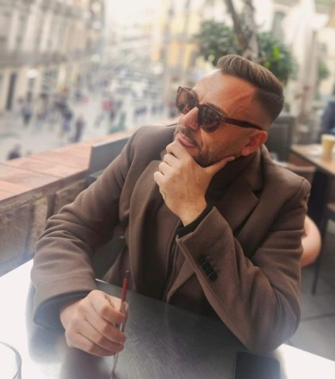

Ganzheitliche Gesundheit
Gesundheit umfasst für mich Körper, mentale Balance, Lebensqualität und bewusste Routinen.
Longevity Curator
Jung Leben ist aus einem persönlichen Weg entstanden: aus Selbstreflexion, Erfahrung und der Frage, wie körperliches Wohlbefinden, mentale Klarheit und innere Balance zusammenwirken.

Erfahrungsgeber, Beobachter und Longevity Curator.
Über mich
Der Ruf, grundlegende Fragen in meinem Leben zu beantworten, führte mich dazu, verschiedene Methoden und Techniken der Persönlichkeitsentwicklung zu erkunden. Mit der Zeit wurde mir klar, dass echte Entwicklung nicht nur im Kopf stattfindet.
Körperliches Wohlbefinden, mentale Klarheit und geistige Entwicklung formen ein Ganzes. Der Körper wurde für mich immer mehr zu einem zentralen Element: als Fahrzeug, das uns durch das Leben trägt. Wie sorgfältig wir dieses Fahrzeug pflegen, beeinflusst, wie geschmeidig oder holprig unsere Reise verläuft.
Jung Leben ist deshalb kein klassischer Shop. Es ist ein Ort für Erfahrungen, Einordnungen und bewusste Entscheidungen.
Meine Mission
Jung Leben verbindet persönliche Erfahrung, Selbstreflexion und sorgfältige Produktauswahl. Es geht nicht um schnelle Versprechen, sondern um bewusste Entscheidungen für Körper, Geist und Alltag.
Gesundheit umfasst für mich Körper, mentale Balance, Lebensqualität und bewusste Routinen.
Der Körper begleitet uns jeden Tag. Ihn wertzuschätzen, ist für mich Teil eines langen und erfüllten Weges.
Mentales Wohlbefinden entsteht nicht zufällig. Es wächst durch Aufmerksamkeit, Klarheit und gute Gewohnheiten.
Ich schaue genauer hin: auf Inhaltsstoffe, Anwendung, Alltagstauglichkeit und das Gefühl, das ein Produkt vermittelt.
«Für mich beginnt Wohlbefinden damit, dem eigenen Körper zuzuhören – und hört dort niemals auf.»
Mein Ansatz
In den letzten Jahren habe ich gelernt, dass viele Menschen nach Orientierung suchen. Der Markt für Gesundheits-, Pflege- und Longevity-Produkte ist gross, laut und oft schwer einzuordnen. Genau hier möchte Jung Leben ansetzen.
Ich möchte Produkte nicht einfach empfehlen, weil sie gut aussehen oder aktuell im Trend sind. Mich interessiert, ob sie zu einer echten Routine passen, ob sie verständlich erklärt sind und ob sie sich stimmig in einen bewussten Lebensstil einfügen.
Deshalb führen die Inhalte auf Jung Leben zuerst über Erfahrungsberichte. Erst danach geht es zur Produktdetailseite mit Preis, Anbieter und später auch iHerb- oder Affiliate-Link.
Wofür Jung Leben steht
Jung Leben soll Menschen unterstützen, die nicht einfach konsumieren, sondern verstehen möchten, warum ein Produkt zu ihnen passen könnte.
Produkte und Routinen werden im Kontext eines bewussten, natürlichen Lebensstils betrachtet.
Inhaltsstoffe, Anwendung, Anbieter und Alltagstauglichkeit werden nicht ausgeblendet.
Der Körper ist kein Projekt, das optimiert werden muss, sondern ein Begleiter, der Pflege verdient.
Jung Leben basiert auf Beobachtung, persönlichem Erleben und respektvoller Weitergabe.
Warum Erfahrungsberichte zuerst?
Preise und Anbieterlinks stehen bei Jung Leben nicht im ersten Schritt im Vordergrund. Zuerst geht es darum, ein Thema zu verstehen, ein Produkt einzuordnen und ein Gefühl dafür zu bekommen, ob es zur eigenen Situation passt.